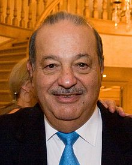

Slim was born on January 28, 1940, in Mexico City, to Julián Slim Haddad
(born Khalil Salim Haddad Aglamaz) and Linda Helú Atta, both Maronite Catholics
of Lebanese descent.
Slim always knew he wanted to be a businessman, and he began to develop his
business and investment acumen at a young age.He received business lessons from
his father Julian, who taught him finance, management and accounting, teaching
him how to read financial statements as well as the importance of keeping
accurate financial records, a practice that Slim carries on to this day.
At the age of 11, Carlos invested in a government savings bond that taught him
about the concept of compound interest. He eventually saved every financial and
business transaction he made into a personal ledger book which he keeps to this
day. At the age of 12, he made his first stock purchase, by purchasing shares in
a Mexican bank.By the age of 15, Slim had become a shareholder in Mexico’s
largest bank. At the age of 17, he earned 200 pesos a week working for his
father's company. He went on to study civil engineering at the National
Autonomous University of Mexico, where he also concurrently taught algebra and
linear programming.
Though Slim was a civil engineering major because of his fascination with
numbers, he also displayed an interest in economics. He took economics courses
in Chile once he finished his engineering degree. Graduating as a civil
engineering major, Slim has stated that his mathematical prowess and his
background of linear programming was a key factor in helping him gain an edge in
the business world, especially when reading financial statements.
After graduating from college in 1961, Slim began his career as a stock trader
in Mexico, often working 14-hour days. In 1965, profits from Slim's private
investments reached US$400,000, allowing him to start the stock brokerage
Inversora Bursátil.In addition, he also began laying the financial groundwork
for Grupo Carso. In 1965 he also bought Jarritos del Sur. In 1966, worth US$40
million, he founded Inmobiliaria Carso.
Companies found within the construction, soft drink, printing, real estate,
bottling and mining industries were the focus of Slim's early burgeoning
business career.
He later expanded into numerous industries including auto parts,
aluminium, airlines, chemicals, tobacco, manufacturing of cables and wires,
paper and packaging, copper and mineral combustion, tires, cement, retail,
hotels, beverage distributors, telecommunications and financial services where
Slim's Grupo Financiero Inbursa – which sells insurance and invests the savings,
mutual funds and pension plans of millions of ordinary Mexicans By 1972, he had
established or acquired a further seven businesses in these categories,
including one which rented construction equipment.
In 1976, he branched out by
acquiring a 60 percent share of Galas de México, a small printer of
cigarette-pack labels for US$1 million, and in 1980, he consolidated his
business interests by forming Grupo Galas as the parent company of a
conglomerate that had interests in industry, construction, mining, retail, food,
and tobacco. In 1981, Slim acquired a majority stake in Cigarros la Tabacelera
Mexicana (Cigatam), Mexico's second largest producer and marketer of cigarettes,
at a fire sale price.